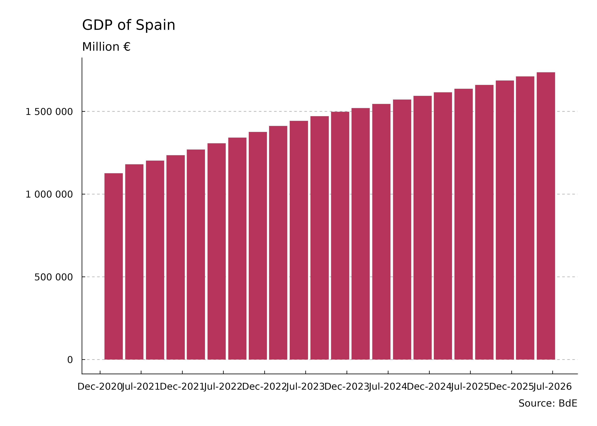
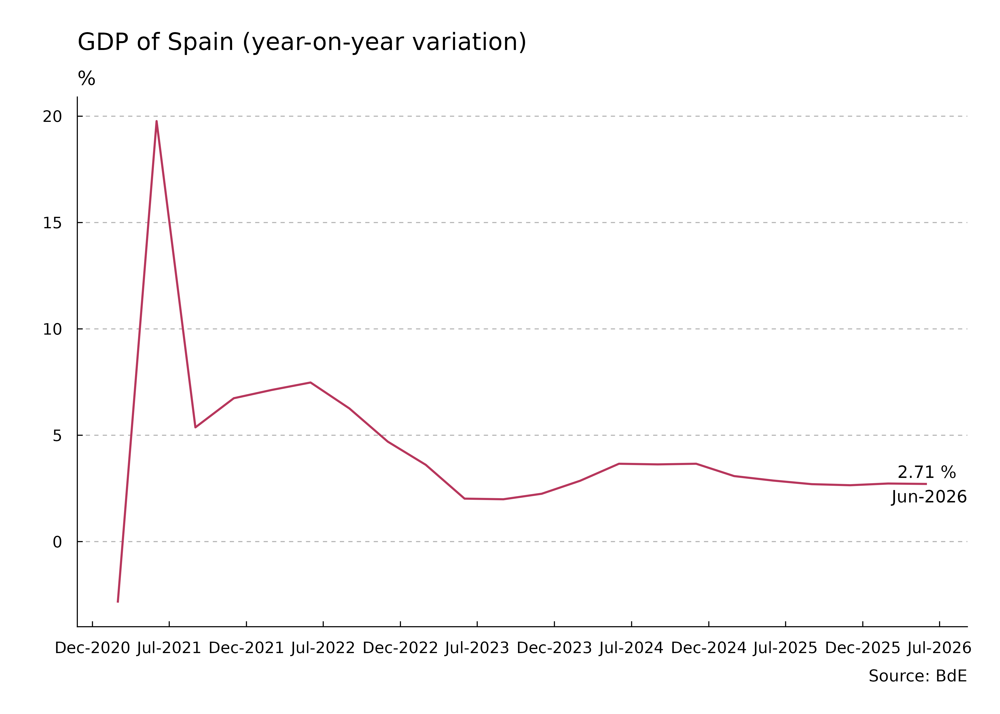
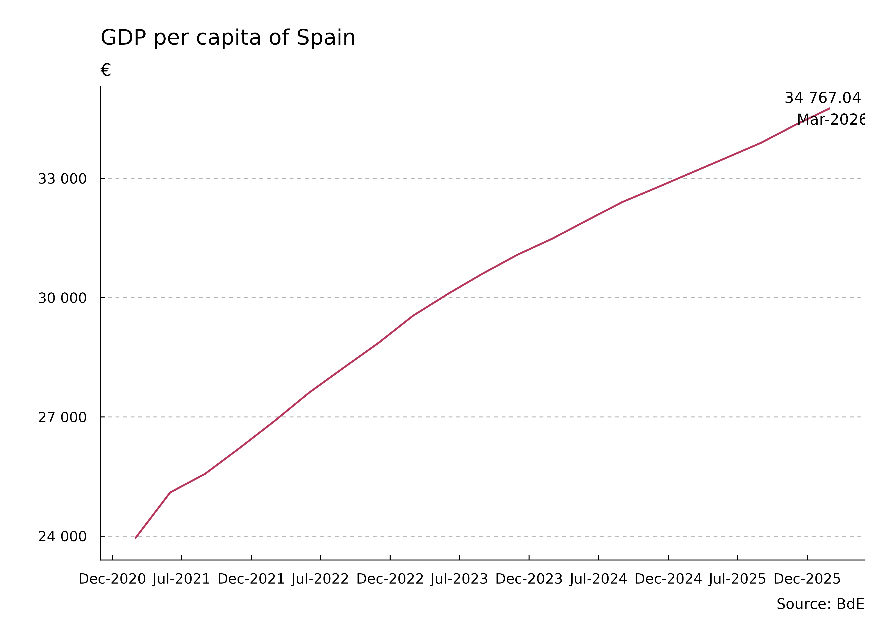
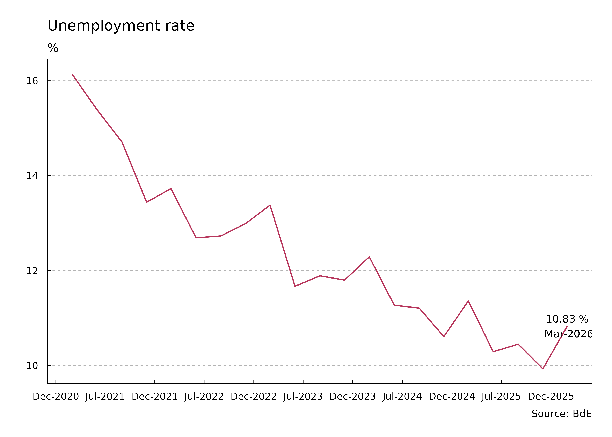
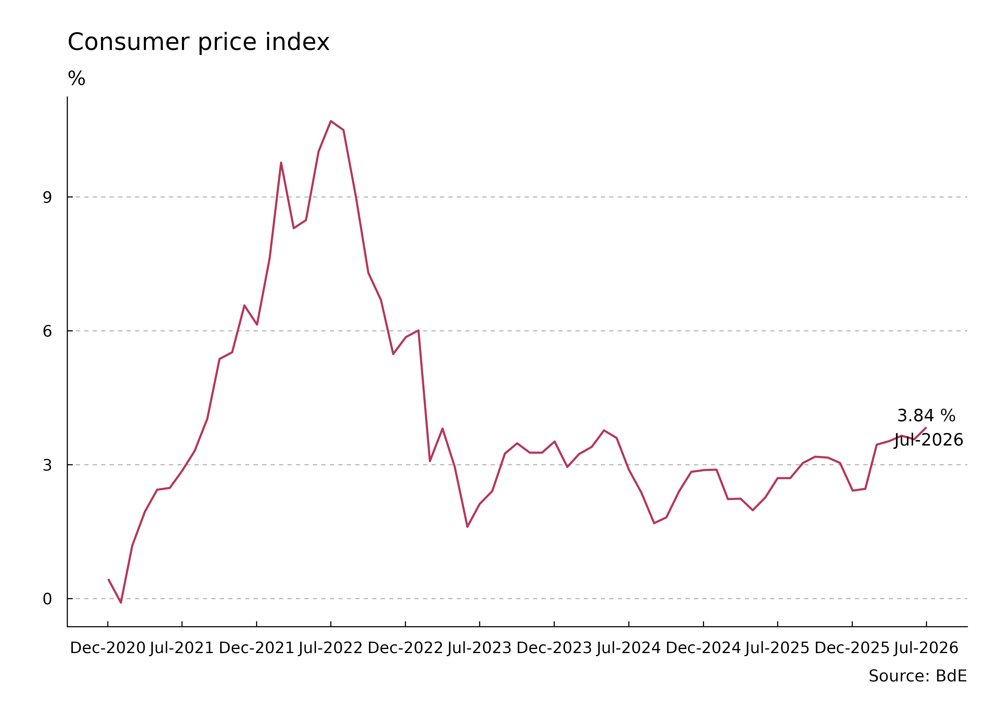
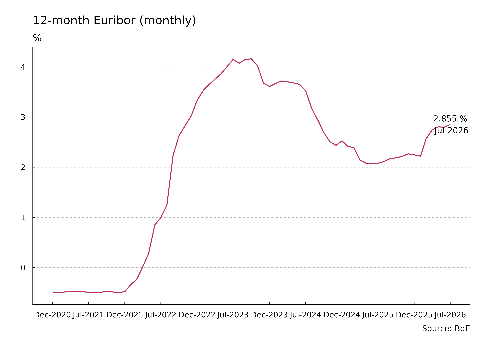
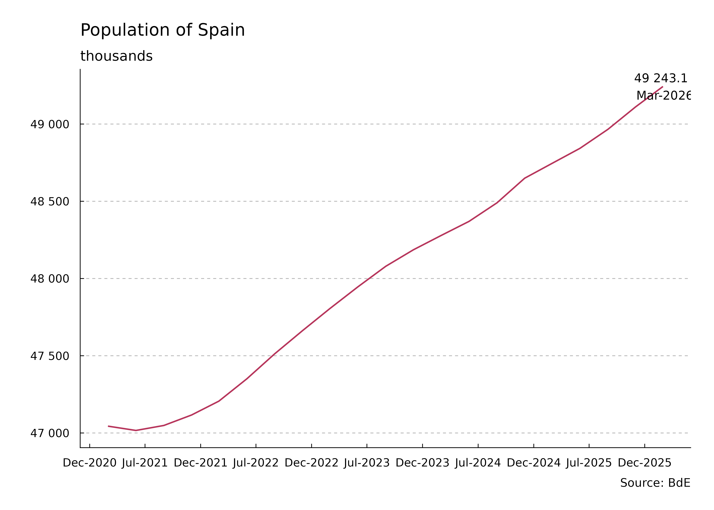

This article shows the evolution of selected economic indicators of Spain, based on information from Banco de España.
Last update: 17-February-2026.
GDP of Spain
Aggregated (last 4 quarters)

Year-on-year variation

GDP per capita

Unemployment Rate

Consumer Price Index

Monthly Euribor

Population
